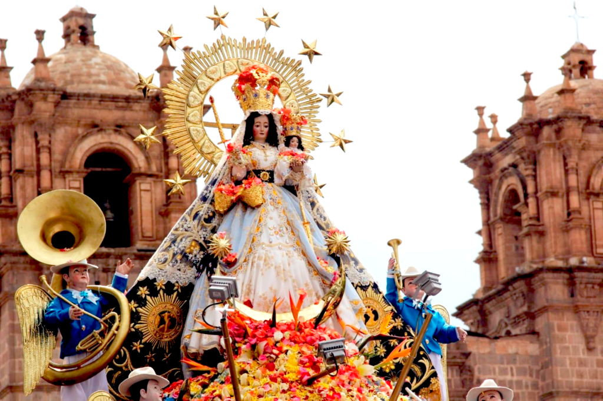
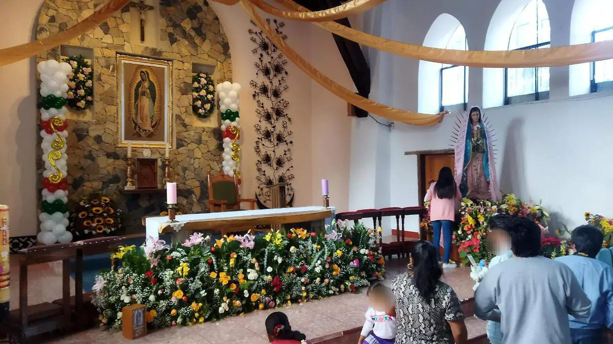

Fiesta de la Virjen de la Candelaria(2 de febrero)
Esta celebracion se realiza cada 2 de febrero en el Barrio de Otumba.Es una tradición religiosa en la que los habitantes se reúnen para honrar a la Virgen de la Candelaria. Durante esta fecha se llevan a cabo misas, actividades religiosas y reuniones familiares.
También es común encontrar música, puestos de comida y productos tradicionales. Esta fiesta permite conservar las costumbres religiosas y fortalecer la convivencia entre los habitantes de la comunidad.

Feria de Santa Maria y la Santa Cruz(3 de mayo)
Es una de las celebraciones religiosas más representativas de Valle de Bravo. Se realiza en honor al Cristo Negro, una imagen religiosa muy venerada por los habitantes de Santa María Ahuacatlán.
La festividad incluye novenas, peregrinaciones, misas y recorridos religiosos. También se presentan mojigangas, toritos y castillos de fuegos artificiales durante la noche. Los habitantes participan en la organización de las actividades para mantener viva esta tradición que se transmite de generación en generación.

Fiesta de la Virgen de Guadalupe(12 de diciembre)
Esta celebración se realiza para honrar a la Virgen de Guadalupe, una de las figuras religiosas más importantes de México. En Valle de Bravo, los habitantes participan en peregrinaciones, misas y mañanitas para demostrar su devoción.
Durante los días previos al 12 de diciembre se organizan recorridos religiosos y reuniones comunitarias. El día principal se realizan celebraciones en las capillas y templos, acompañadas de música, flores y fuegos artificiales. Es una fecha en la que las familias se reúnen y comparten alimentos tradicionales.

Fiesta de San Francisco de Asis(4 de octubre)
Es una de las fiestas más importantes del municipio, ya que San Francisco de Asís es el santo patrono de Valle de Bravo. La celebración comienza con mañanitas y actividades religiosas en su honor.
Uno de sus atractivos principales es el tradicional desfile de yuntas adornadas con flores, en el que participan agricultores y habitantes de diferentes barrios. También se presentan mojigangas, bandas de música, carros alegóricos y actividades culturales. Por la noche se realizan celebraciones populares en las que las familias disfrutan de alimentos típicos y fuegos artificiales.
Esta fiesta representa el agradecimiento por las cosechas, la unión de la comunidad y el respeto por las tradiciones.